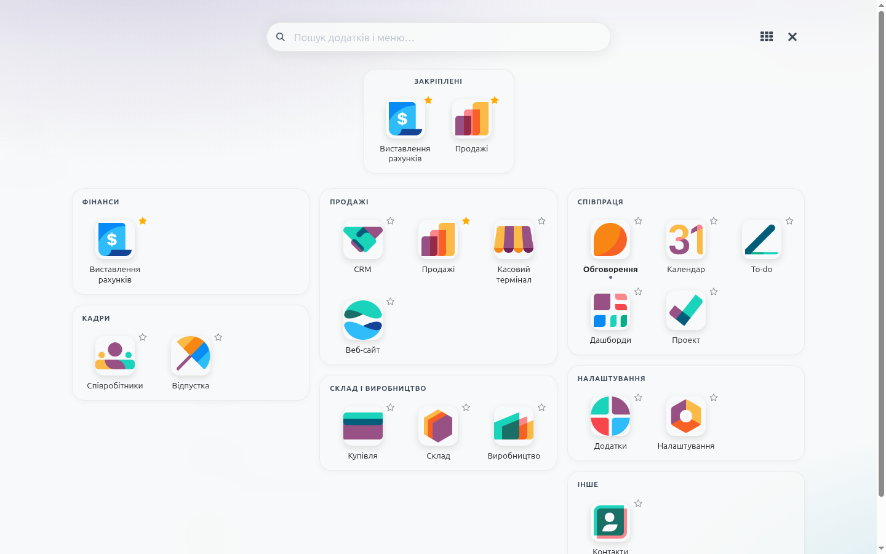
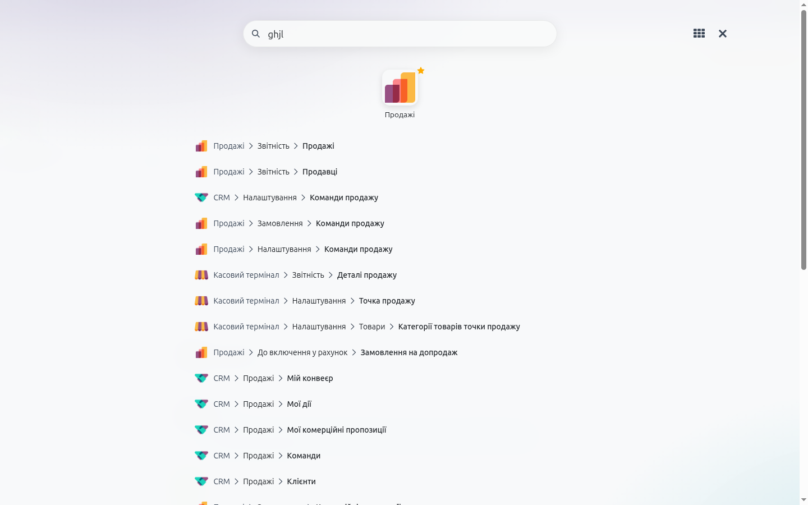
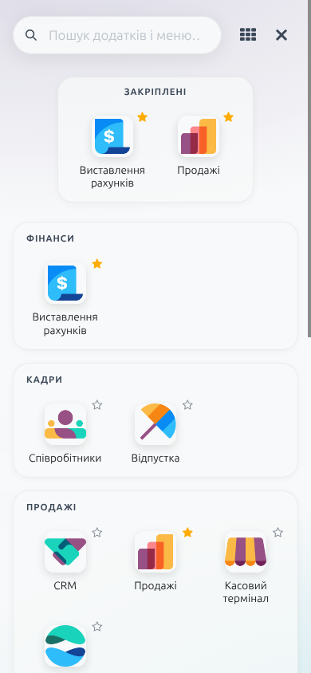

Повноекранне меню додатків плитками для Odoo 19 Community

Додатки розкладено картками: фінанси, кадри, продажі, склад і виробництво, галузеві. Зірочкою додаток закріплюється вгорі, порядок змінюється перетягуванням. Нещодавно відкриті — поруч.
Шукає і додатки, і будь-який пункт меню з повним шляхом. Розуміє неправильну розкладку: «pdsn» знайде «звіт», «,fyr» — «банк».
Alt+H — відкрити, набір тексту — пошук, стрілки — переміщення, Enter — відкрити, Esc — очистити або закрити. На /odoo сітка відкривається сама, як домашній екран.


Залежить лише від web. Налаштування (закріплені, нещодавні, режим груп) зберігаються в браузері
для кожного користувача. Кольори беруться з теми Odoo.